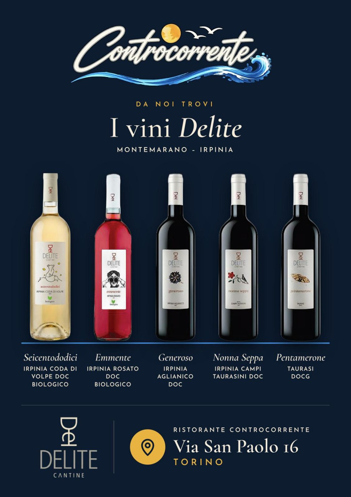

Novità
Caricamento delle notizie…
Meteo ·
Controcorrente · via San Paolo 16, Torino
Pranzo12:00–14:30
Previsione non disponibile
Cena19:00–22:30
Previsione non disponibile
Prenotando tavolo e menù di pranzo, entro le 12,
½ litro d’acqua · caffè · coperto sono inclusi
Prenota su WhatsAppPreordina dal menù
½ litro d’acqua · caffè · coperto sono inclusi
Prenota su WhatsAppPreordina dal menù
Attendere la conferma del Ristorante per considerare valido l’ordine.
Prenotando tavolo e menù di cena, entro le 18, il coperto di 1,50 € è omaggio.
Prenota su WhatsAppPreordina dal menù
Prenota su WhatsAppPreordina dal menù
Attendere la conferma del Ristorante per considerare valido l’ordine.
Prova la nuova Chat Commensali
Scambia opinioni, fai due chiacchiere e nuove conoscenze con gli altri commensali del Controcorrente, usando uno pseudonimo.
Entra nella chatAscolta la radio in alta fedeltà
Premi il pulsante della musica ♪ e ascolta gratuitamente la nostra radio in streaming preferita.
CONTROCORRENTE CLUB · MANGI, ACCUMULI, RISPARMI
1 € = 1 punto · 100 punti = 5 € di sconto dalla cena successiva.
Scopri il Club e gli sconti
1 € = 1 punto · 100 punti = 5 € di sconto dalla cena successiva.
Scopri il Club e gli sconti
🔔 Restiamo in contatto, senza urlare dalla cucina!
Un solo saluto al giorno, con invito a scoprire le proposte aggiornate sul sito: premi Notifiche in alto, vicino alla musica, e scegli Consenti. Un secondo clic le disattiva.
Non compare la richiesta? Apri i permessi del sito dal simbolo accanto all’indirizzo e abilita le notifiche. Su iPhone: aggiungi il sito alla schermata Home e riaprilo da lì.Accessi al sito

––
Browser autorizzati alle notifiche: …QR code del ristorante
